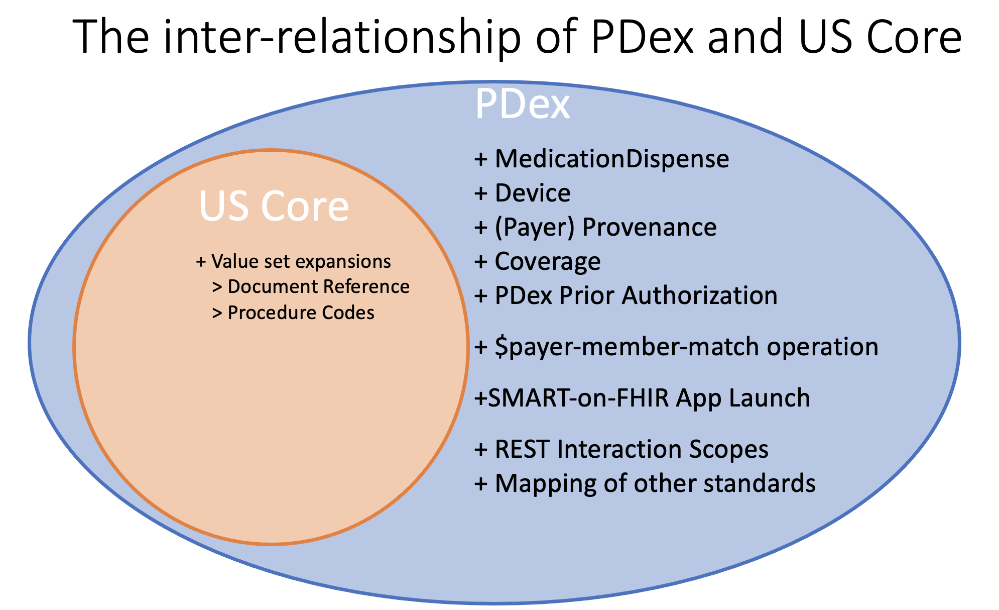
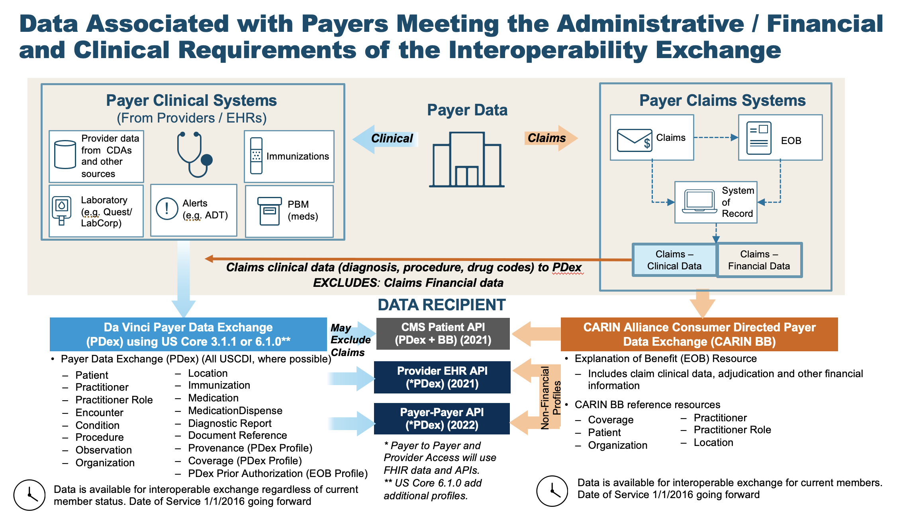
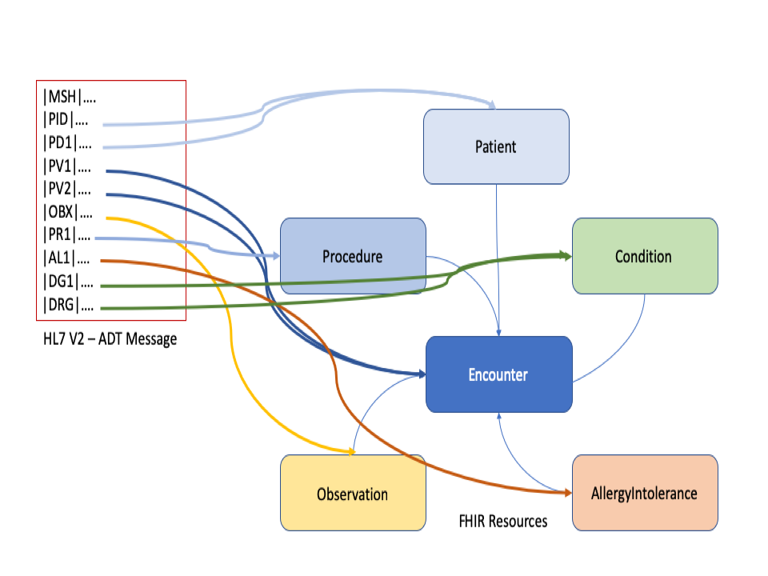

Da Vinci Payer Data Exchange
2.2.0 - STU 2.2

Da Vinci Payer Data Exchange
2.2.0 - STU 2.2

Da Vinci Payer Data Exchange - Local Development build (v2.2.0) built by the FHIR (HL7® FHIR® Standard) Build Tools. See the Directory of published versions
| Page standards status: Informative |
The PDex guide is based on the HL7 FHIR 4.0.1 standard, as well as the CDS Hooks, SMART on FHIR and OAuth2.0 standards, which build additional capabilities on top of FHIR. This architecture is intended to maximize the number of clinical systems that conform to this guide as well as to allow for easy growth and extensibility of system capabilities in the future.
To understand how to read an Implementation Guide implementers should refer to the How to Read page in the FHIR Specification.
This implementation guide uses terminology, notations and design principles that are specific to FHIR. Before reading this implementation guide, it's important to be familiar with some of the basic principles of FHIR as well as general guidance on how to read FHIR specifications. Readers who are unfamiliar with FHIR are encouraged to read (or at least skim) the following prior to reading the rest of this implementation guide.
This Implementation Guide (IG) also utilizes the profiles detailed in the HL7 FHIR� US Core Implementation Guide STU3 Release 3.1.1, HL7 FHIR� US Core Implementation Guide STU6 Release 6.1.0, or HL7 FHIR� US Core Implementation Guide STU7 Release 7.0.0 based on HL7 FHIR Release 4. This guide addresses use cases for payers to share clinical information with members, their authorized third-party applications, other payers or providers. In addition, the guide adds profiles and operations that are either not available or are unsuited for use by the payer community. An example of this is the MedicationDispense that is used to record the prescription medications supplied by a pharmacy to a health plan member. The relationship between US Core and Payer Data Exchange can be expressed in a Venn diagram as shown below.
This IG also utilizes resources from the FHIR R4 Base Specification. Implementers should therefore refer to the following resources from the base specification:
 |
Implementers of this specification therefore need to understand some basic information about these specifications, which act as building blocks for this Implementation Guide.
The purpose of this Implementation Guide is to enable data to be exchanged between Health Plans (Payers) and Practitioners (Providers) and via Member-authorized exchange between Health Plans and Third-Party Applications, or with other health plans.
All data exchanged by Health Plans using the interactions covered in this IG SHALL be transformed to FHIR R4 resources. §pdex-119 Health Plans MAY have both data from clinical and claims sources that they store in their Systems of Record. §pdex-120 This IG does not require Health Plans to store this data in FHIR formats, rather only capable of transforming to FHIR resources for the purposes of data exchange with Providers, other Health Plans and Third-Party Applications for the interactions covered in this IG.
There are items in this guide that are subject to update. This includes:
We have mapped the CARIN Alliance CPCDS as a generic representation of information held by Payers relevant to representation in US Core profiles.
The schematic shown below provides an overview of this transformation.
 |
Health Plans receive data from many other sources that contribute to a Member's Health History. In addition to medical claims Health Plans may receive C-CDA documents or HL7 V2 messages, such as Admit, Discharge, Transfer (ADT) Messages. As an example, the diagram below shows how an ADT Message can be transformed into HL7 FHIR Resources:
 |
If the same data element is included in the member’s record from multiple sources for the same event, that information only needs to be mapped to FHIR and made available via the Patient Access API once. Payers SHOULD look at the data they maintain and ensure that information relevant to the member’s care and treatment over time is accurately represented – in this way, it may not be appropriate to include a single data element only once across multiple events. §pdex-121
Where data is passed via Payer Data Exchange, Payers have the ability to indicate the provenance of the information they are sending. Receiving plans are not required to deduplicate data they have received from other payers or otherwise review or validate the data they receive from another payer.
This IG covers three methods of information exchange:
This version of the IG adds new APIs that support the requirements of the CMS Prior Authorization Rule (CMS-0057). These APIs are:
Earlier versions of the PDex IG recommended the use of CDS Hooks to enable Provider Access to ember data. That method has been superseded by the Provider Access API that meets the requirements of the CMS Prior Authorization Rule (CMS-0057).
Note: This section is being considered for removal in the next release of this IG.
The PDex Implementation, Actors, Interactions, Data Payloads and Methods section provides an introduction to the CDS Hooks method of exchange. That section also includes information the Actors involved in data exchange and the methods of exchange of the data payloads covered by this IG.
An overview of the flow of the CDS-Hooks and SMART-on-FHIR exchange is shown in section 8 - CDS Hooks. This exchange flow is used for communication between Providers and Health Plans. The CDS-Hook will be used to perform a Patient/Member match and return a token that enables a SMART-on-FHIR App to access information via the Health Plan's FHIR API for the matched member.
The sharing of data with a member controlled Third Party App is accomplished through the Member's HIPAA Right of Access. As such the member is able to use their data in any way they desire.
The SMART-on-FHIR application framework is a well-defined mechanism for enabling Member/Patient authorization to share information with a SMART-on-FHIR application. The member SHALL authenticate using credentials that have been issued by or are recognized and accepted by the Health Plan. §pdex-122 These are typically the member's customer portal credentials for accessing the health plan.
After authenticating the Member SHALL be presented with an Authorization screen that enables them to approve the sharing of information with the Third Party, or new Health Plan Application that has client application credentials registered with the Health Plan. §pdex-123
The $patient-everything operation for an individual member enables the potential use of Bulk FHIR, using such formats as ND-JSON. This IG does not define the alternate secure transport mechanisms that may be used for exchange between Health Plans. However, the IG does allow for the use of Bulk FHIR formats to exchange data for an individual member where the member has authorized that exchange or Federal, state or local regulations authorize the sharing of information between parties.
The use of the Bulk FHIR specification for transmission of member data SHALL honor jurisdictional and personal privacy restrictions that are relevant to a member's health record. §pdex-124
Data Segmentation capabilities for Bulk Data Transfer are currently being developed by FHIR community members which may have an impact on future revisions of the IG.
Since Health Plans compile information from many sources to create a Member's Health History, it is important that data traceability is maintained. This guide defines a Provenance resource that is used for this purpose. This resource supplements the US Core Provenance profile which is typically not suited to payer's common use cases. The PDex Provenance profile is used to identify the source of information, and the fact that the payer is acting as the transmitting agent.
Health Plans SHOULD accept and retain provenance records that they receive as part of any exchange of FHIR data. §pdex-125 Where a FHIR Provenance resource is not provided, such as when data is received from other non-FHIR sources, the Health Plan SHOULD create FHIR Provenance record(s) to identify the source of the information being exchanged. §pdex-126 Health Plans SHALL provide Provenance records that, at a minimum, indicate that they are playing the role of Transmitter of the data in any PDex information exchange. §pdex-127
In the case of historical data, the Health Plan SHOULD identify the author, source and source format of the data. §pdex-128
Retrieving Provenance for resources is accomplished by adding "_revinclude=Provenance:target" to a search request.
Provenance is covered in more detail in Handling Data Provenance.
IG © 2024+ HL7 International / Financial Management. Package hl7.fhir.us.davinci-pdex#2.2.0 based on FHIR 4.0.1. Generated 2026-03-31
Links: Table of Contents |
QA Report
| Version History |
 |
Propose a change
|
Propose a change